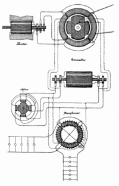

Date personale
Nikola Tesla a fost un inventator, fizician, inginer mecanic, inginer electrician și unul dintre promotorii cei mai importanți ai electricității comerciale. Tesla este considerat ca fiind un important om de știință al sfârșitului de secol XIX și începutului de secol XX. Invențiile, precum și munca teoretică ale lui Tesla au pus bazele cunoștințelor moderne despre curentul alternativ, puterea electrică, sistemele de curent alternativ, incluzând sistemele polifazice, sistemele de distribuție a puterii și motorul pe curent alternativ, care au determinat cea de-a doua Revoluție Industrială.
Tesla era etnic sârb, fiind născut în satul Smilijan, în Imperiul Austriac (actualmente în Croația).
Tesla își petrecea mult timp citind cărți, pe care le memora în întregime, având o memorie fotografică.Tesla a relatat în autobiografia sa că în numeroase ocazii a experimentat momente detaliate de inspirație. În timpul copilăriei a avut mai multe episoade de boală. Avea o afecțiune foarte ciudată, care se manifesta prin apariția unor fascicule de lumină orbitoare în fața ochilor, adesea însoțite de halucinații. Aceste halucinații erau asociate unui cuvânt sau unei idei care îl urmărea. Uneori aceste halucinații îi dădeau soluția problemei care îl preocupa.
Putea vizualiza în formă reală orice obiect al cărui nume îl auzea. În prezent, afecțiunea numită sinestezie prezintă simptome similare. Tesla putea vizualiza o invenție cu o precizie incredibilă, incluzând toate dimensiunile, înainte de a începe să o construiască, tehnică pe care azi o cunoaștem ca gândire vizuală. Nu obișnuia să deseneze schițe ale invențiilor, concepea totul din minte. De asemenea, avea premoniții ale evenimentelor care aveau să se întâmple, premoniții care au început încă din timpul copilăriei.
Hotărârea lui Tesla în a demonstra superioritatea curentului alternativ asupra curentului continuu al lui Edison a generat ceea ce se cunoaște drept "războiul curenților". În 1893 s-a organizat în Chicago o expoziție publică a curentului alternativ, demonstrându-se superioritatea acestuia asupra curentului continuu al lui Edison. În același an, Tesla a reușit să transmită energie electromagnetică fără cabluri, construind primul radio-transmițător. A prezentat patentul acestuia în 1897, doi ani după, Guglielmo Marconi reușind prima transmisie radio. Marconi a înregistrat patentul în 10 noiembrie 1900 și i-a fost refuzat, considerându-se o copie a patentului lui Tesla. A început astfel un litigiu între compania lui Marconi și cea a lui Tesla.

Generatorul de curent electric al lui Nikola Tesla, care utilizeaza circuitele de curent alternativ pentru transportul de energie la distante mari.
După ce a studiat mărturiile mai multor proeminenți oameni de știință, Curtea Supremă de Justiție a Statelor Unite ale Americii a hotărât în 1943 că dreptatea era de partea lui Tesla (deși numeroase cărți îl menționează, încă, pe Marconi drept inventator al radioului).
La Cascada Niagara s-a construit primă centrală hidroelectrică datorită descoperirilor lui Tesla în 1893, reușind în 1896 să transmită electricitate orașului Buffalo, New York. Cu sprijinul financiar al lui George Westinghouse, curentul alternativ l-a înlocuit pe cel continuu. Tesla a fost considerat de atunci înainte fondatorul industriei electrice.
În 1891 a inventat bobina Tesla.
În onoarea sa, se denumește "Tesla" unitatea de măsură a câmpului magnetic în Sistemul internațional de unități.